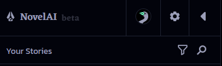
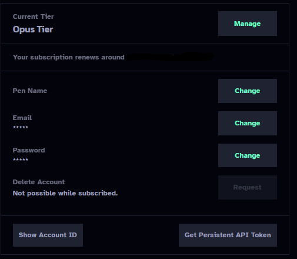
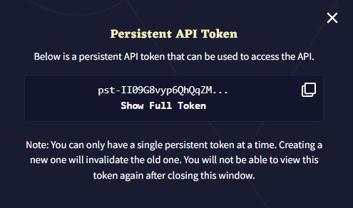

NovelAI is a paid subscription service that allows unlimited monthly access to their high-quality in-house text generation, image generation, and text-to-speech models. Register an account here to get started: https://novelai.net/
You will get only 50 generations for free to evaluate the model. When the "Not eligible for this model" error appears, this means that you've exhausted your trial period and need to subscribe to a paid plan.
#API Key
To get your NovelAI API key, follow these steps:
Select the gear icon at the top of the left sidebar.

Left Sidebar
Select "Account" under "User Settings".
User Settings
Select "Get Persistent API Token".

Account
Select the copy icon to copy your NovelAI API token to the clipboard.

Persistent API Token
#Models
You should use Kayra.
Clio is not a bad model, but not as powerful as Kayra. Clio's speed advantage is insignificant. On NovelAI's tablet and scroll tiers, Clio does have a larger context size than Kayra, but trading that off against better coherence/prose quality from Kayra is unlikely to be worth it.
#Settings
The files with the settings are here (SillyTavern\public\NovelAI Settings).
You can also manually add your own settings files.
#Response Length
How much text you want to generate per message. Note that NovelAI has a limit of 150 tokens per response.
#Context Size
How many tokens of the chat are kept in the context at any given time. How large the maximum context size you can use depends on the model and your subscription tier:
Kayra (Tablet) - 3072 tokens
Kayra (Scroll) - 6144 tokens
Kayra (Opus) and Clio (all tiers) - 8192 tokens
#Preamble
Text that is inserted right above the chat to modify the writing style. The recommended format is a list of short tags, like "[ Style: chat, detailed, sensory ]".
#Preset Descriptions
This is, according to Novel AI, what the default presets are good for.
#Kayra
Asper - For creative writing. Expect unexpected twists.
Blended-Coffee - (CFG) Fresh Coffee with some CFG mixed in.
Blook - (CFG) Tends towards simple, concise but varied language.
Carefree - A good All-rounder
CosmicCube - (CFG) A solid, sensible baseline. Tweak randomness to preference.
Fresh-Coffee - Keeps things on track. Handles instruct well.
Green-Active-Writer - (CFG) Similar to Writer's Daemon, but with high CFG
PilotFish - (CFG) Made for lore-heavy creative writing.
Pro_Writer - Mimic the pacing and feel of best-selling fiction
Stelenes - More likely to choose reasonable alternatives. Variety on retries.
Tea_Time - It gets good when it gets going.
Tesseract - (CFG) Maintains style and quality.
Writers-Daemon - Extremely imaginative, sometimes too much.
#Clio
Edgewise - Handles a variety of generation styles well
Fresh Coffee - Keeps things on track.
Long-Press - Intended for creative prose.
Talker Chat - Designed for chat style generation.
Vingt-Un - A good all-around default with a bent towards prose.
#Tips and FAQs for using NovelAI with SillyTavern
There are a lot of common problems and questions that come up when switching to NovelAI from another ST backend API. The difference comes down to what the models are trained for. Most likely, you've used an OpenAI or Anthropic model (or a local model made to resemble those), which is built around following the user's instructions. NovelAI's models are built purely around text completion: instead of taking your input as a message and formulating a response, NAI's models attempt to continue the incoming prompt. Due to this difference, a lot of tips and common knowledge that work for other APIs won't work for NAI.
#Tweaking settings for NovelAI
Under Advanced Formatting (the A icon):
Set "Context Template" to "NovelAI"
Set "Tokenizer" to "Best match"
Check "Always add character's name to prompt"
Check "Collapse Consecutive Newlines"
Uncheck the "Enabled" box under "Instruct Mode"
Under User Settings (the person with a gear)
Turn on "Swipes" (Not NAI specific, but it's so useful you should just do it)
#Building/Adapting character cards for NovelAI
To optimize your character cards for NovelAI, there are a couple of recommended methods for writing your character's description: prose, and attributes.
Prose is so simple it doesn't feel like it should work: "Sylpheed is a young-looking but actually 900 year old nymph. She's short and petite, with long white hair that fades into a green gradient in her braided side ponytail, and emerald green eyes shaped like crosses.[...]" No, really, that's it. Just write out, in normal sentences, what the character looks like, acts like, etc., and the AI will pick up on it.
If you don't trust your writing abilities or want a more structured way to go about it, you can use the attributes method, which is present in the NovelAI training data. This works as a simple list of character traits of different types. Here's a list of possible attributes that have been tested to be effective with NovelAI's models:
"Type: character" is there to tell the AI that this is describing a character (as opposed to a location, object, or other type of thing). The rest of the attributes are optional, and some are redundant (for example, Personality, Mind, and Mental all mean basically the same thing), but these have been tested and work well with NovelAI's models. Fill in whichever ones are relevant to your character. The attributes should be written in lower case and separated by commas, no need for quotes around the words. For example:
Skills: lockpicking, stealth, running away very fast
These methods are recommended because they're present in NovelAI's training data, so they specifically work well with the model.
#Example cards
Here are a couple of example cards, made for NovelAI, that show off different ways of creating cards specifically for NovelAI. The first card, Valka, uses the attributes method for the character description, while Eris, the second card, uses prose descriptions, along with a large amount of example dialogue.
Valka
Eris
#What not to do
Most of the existing character card formats are a poor fit for NovelAI. They'll give you some results, even some good ones, but they have a lot of problems. W++ is one of the biggest offenders, where it doesn't resemble anything that NovelAI's models were trained on, and its constant use of brackets/braces/quotes eats up a ton of tokens, bloating the size of the cards with no real benefit.
Of the existing formats that aren't baked into NovelAI, AliChat is the one most likely to work, as it relies on using example messages to get across both information about the character and their voice at the same time, in the format of the type of message that you want the AI to output.
For most other formats, since they are usually ways of listing out different characteristics of a particular character, they can be converted to the attributes method rather straightforwardly.
#Which module should I use?
Probably No Module. Prose Augmenter is useful if you want a character to speak in a more flowery manner, but be careful not to overdo it. Text Adventure might be useful for a text adventure-style card/story.
#Not the instruct module?
You can invoke the Instruct module when you need it. Create a newline in your message, and put your instructions in curly brackets like this: { CharName is offended by that seemingly innocuous statement } (the spaces are required between the text and the brackets). Doing that will automatically switch the AI into the Instruct module for a short time. You don't want to use the Instruct module all the time because it tends to produce less creative output than the other modules, just when you need to guide the AI strongly in a particular direction.
#Why do my responses keep getting cut off?
NovelAI limits response length to ~150 tokens total, even if you set the slider higher than that. When it reaches the number of tokens in the slider or 150, whichever is lower, it will generate up to 20 more tokens, looking for a stop sequence or the end of a sentence, so there's an effective limit of 170 tokens for a response, at which point it will just stop, causing it to cut off.
If it cuts off, you can select the continue option (in the three-line menu to the left of the text box) to get the character to continue their response.
If you regularly want responses longer than 170 tokens, you can work around the limit like this:
Keep the response length at 150 tokens.
Under Advanced Formatting, enable Auto-continue.
Set the "Target length" to the desired length.
This will chain together multiple generations to give you longer messages but doesn't guarantee that the reply will be 100% of the desired length if the model decides to stop.
#How do I get the bot to write longer responses?
Read the above about responses getting cut off. That will help to make sure that responses aren't cut off prematurely by running into the limit of generation length.
If your responses aren't getting cut off but are still too short, it's likely you're dealing with "garbage in, garbage out" - if you give the model bad examples, it will produce bad output. If the character card has no example dialogue or short example dialogue and the messages you send to the bot are short, the model will pick up on that, take it as the accepted way to do things and the responses will be short. So, write longer example dialogue and longer messages to the bot. (You can always use NovelAI to write some example dialogue for you rather than doing it yourself.)
#How do I get the bot to stop talking for me?
Check that the character card's first message and example dialogue don't include the character taking actions for you - if they do, then rewrite them to get rid of it acting for you
Make sure that "Always add character's name to prompt" is checked
Make sure that you're currently using the same user persona as the rest of the chat. If you changed user personas and didn't change back (or don't have a persona locked to that chat), the usual rules to stop generating for you will fail
Add ["\n{{user}}:"] to Custom Stopping Strings (shouldn't be necessary, but sometimes helps)
#Why isn't my character responding?
A lot of things can cause this, so we need to look in a few places:
Make sure that "Always add character's name to prompt" is checked in Advanced Formatting
Check to make sure there aren't any errors coming from the API. While you can use SillyTavern with the NAI free trial, once it runs out, you'll just get errors
Check what you have in "Custom Stopping Strings" - if those are being generated at the start of the response, it might be cut off prematurely
#How should I use the Author's Note?
In general, you probably shouldn't. It's inserted very close to the end of the context, and with NAI's models, it frequently overpowers everything else in the context. It's mostly an artifact from older, weaker models where it was more necessary.
#How do I do a scene break/time jump?
Put the following as a system message or on newlines at the start of your next message:
***
[ 2 days later ]
Then put the rest of your message on the next line. The bracketed text can be a time jump, a new location, or anything else. The "***" (hilariously named a "dinkus") tells the AI that the scene has changed, and the bracketed text gives that more context.
#The AI keeps repeating specific words/phrases, what do I do?
As mentioned above, you can push the repetition penalty slider up a bit more, though pushing it too far can make the output incoherent.
To more thoroughly fix the problem, go back through the context, especially recent messages, and delete the repeated word/phrase. Removing it from the context gives the AI less reason to start saying it in the first place.